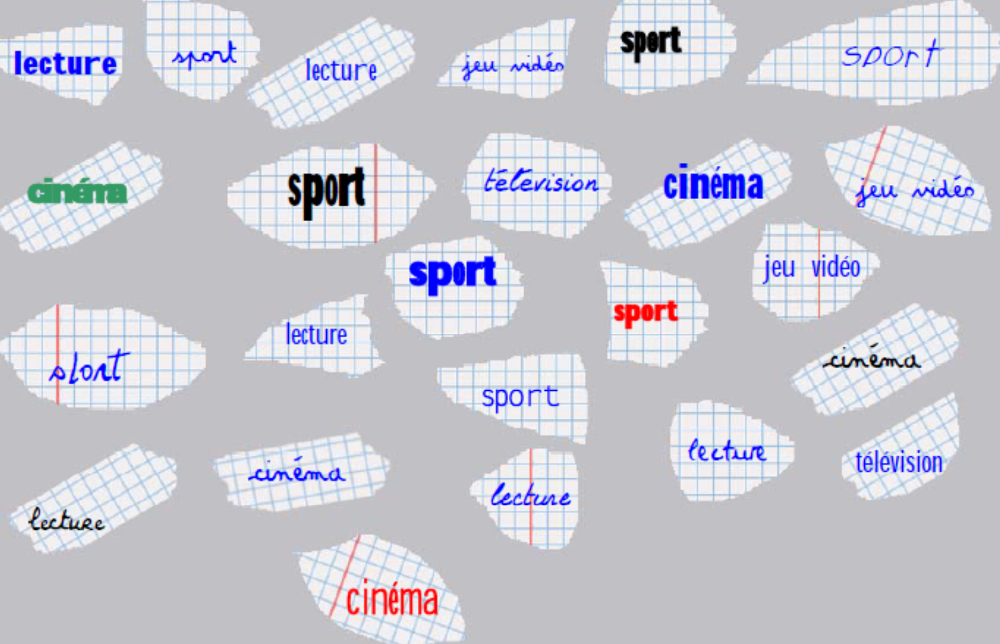
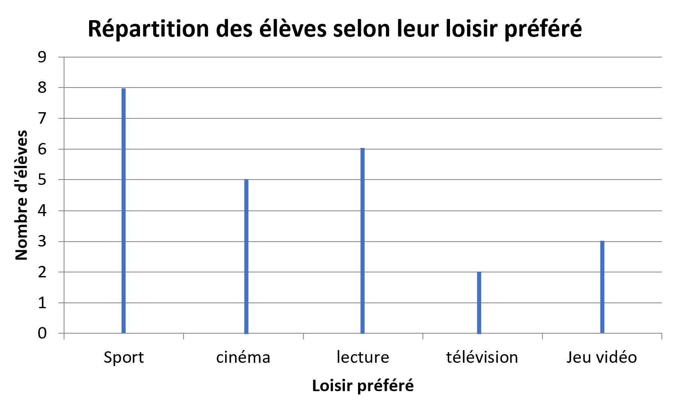
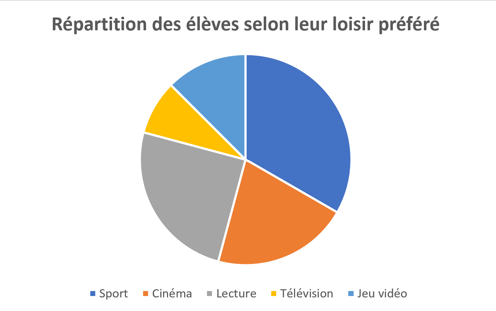
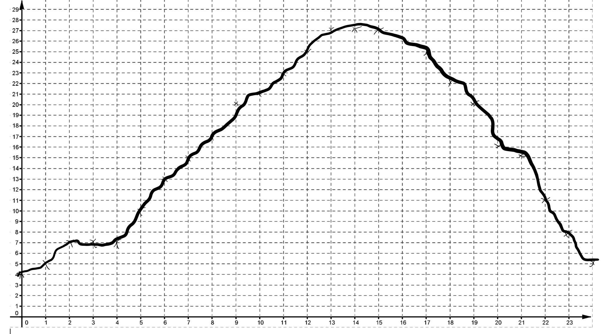

Chapitre 4 : Statistiques et Organisation de données
Introduction aux statistiques
Exemple : Fred veut connaître les loisirs préférés de ses camarades de classe. Il fait une petite enquête auprès de ses 24 camarades et demande à chacun de noter sur un bout de papier son activité préférée.
Voici les résultats :

Définition : Sans le savoir, Fred va réaliser une étude statistique :
Il a rassemblé des données et va les exploiter, c'est à dire qu'il va les présenter autrement pour les utiliser plus facilement.
Utilisation de tableaux
Tableau à simple entrée
Définition : Un tableau à simple entrée est un tableau qui comporte deux lignes, on l'utilise lorsque l'on étudie un seul phénomène.
Exemple : À partir de l'exemple précédent on peut réaliser le tableau suivant :
| Loisir préféré |
Sport |
Cinéma |
Lecture |
Télévision |
Jeu vidéo |
Total |
| Effectif |
8 |
5 |
6 |
2 |
3 |
24 |
L'
effectif est ici le nombre d'élèves ayant la lecture comme loisir préféré, ils sont
6 dans cette classe.
Tableau à double entrée
Définition : On utilise un tableau à double entrée lorsque l'on étudie deux phénomènes en même temps.
Exemple : Fred a décidé de séparer les réponses des filles et des garçons, il réalise donc une étude statistique avec deux phénomènes : le loisir préféré et le sexe de la personne qui répond.
Il obtient le tableau suivant :
|
Loisir préféré |
| Sexe |
Sport |
Cinéma |
Lecture |
Télévision |
Jeu vidéo |
| Fille |
4 |
2 |
4 |
0 |
1 |
| Garçon |
4 |
3 |
2 |
2 |
2 |
| Total |
8 |
5 |
6 |
2 |
3 |
Grâce à ce tableau à double entrée on peut dire que :
- 8 élèves de la classe préfèrent le sport.
- Il y a autant de filles que de garçons qui préfèrent le sport.
- 2 garçons de la classe préfèrent le jeu vidéo.
- 2 filles de la classe préfèrent le cinéma.
Représentations graphiques
Diagramme en bâtons
Définition : Dans un diagramme en bâtons, les hauteurs sont proportionnelles aux quantités qu'elles représentent.
Exemple : À partir de l'exemple du début, on peut réaliser le diagramme en bâtons suivant :

Diagramme circulaire
Définition : Dans un diagramme circulaire, les angles des secteurs sont proportionnels aux quantités qu'ils représentent.
Il faut trouver la valeur des angles pour construire le diagramme circulaire :
Exemple :
| Loisir préféré |
Sport |
Cinéma |
Lecture |
Télévision |
Jeu vidéo |
Total |
| Effectif |
8 |
5 |
6 |
2 |
3 |
24 |
| Angle en degrés |
120 |
75 |
90 |
30 |
45 |
360 |
L'angle complet d'un cercle est de 360°
360 ÷ 24 = 15 donc on multiplie la deuxième ligne par 15 pour obtenir la troisième.

Courbes
Définition : Ces représentations sont utiles pour observer l'évolution d'une grandeur par rapport à une autre.
Exemple : Fred a fait une nouvelle étude statistique. Il a recueilli les températures à Bourbonne toutes les heures pendant une journée. Il obtient le tableau suivant :
| Heure |
0h | 1h | 2h | 3h | 4h | 5h |
6h | 7h | 8h | 9h | 10h | 11h |
12h | 13h | 14h | 15h | 16h | 17h |
18h | 19h | 20h | 21h | 22h | 23h |
| Température en °C |
4 | 5 | 7 | 7 | 7 | 10 |
13 | 15 | 17 | 20 | 21 | 23 |
25 | 27 | 27 | 27 | 25 | 22 |
20 | 16 | 15 | 11 | 8 | 5 |
Réalisons la courbe correspondante à ce tableau.

Évolution de la température en fonction du temps à Bourbonne.